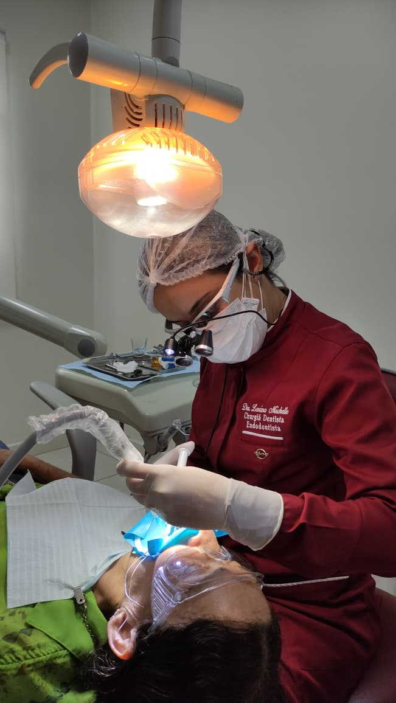
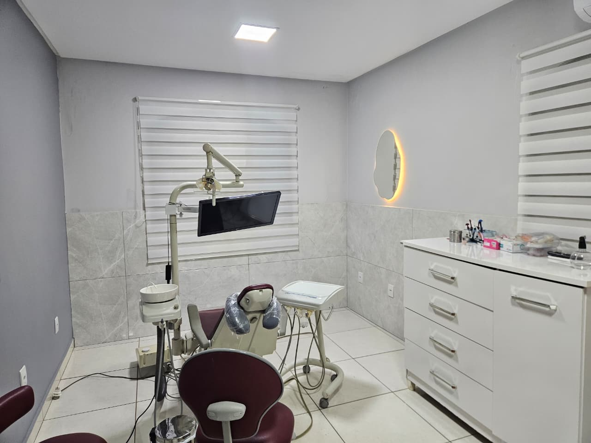
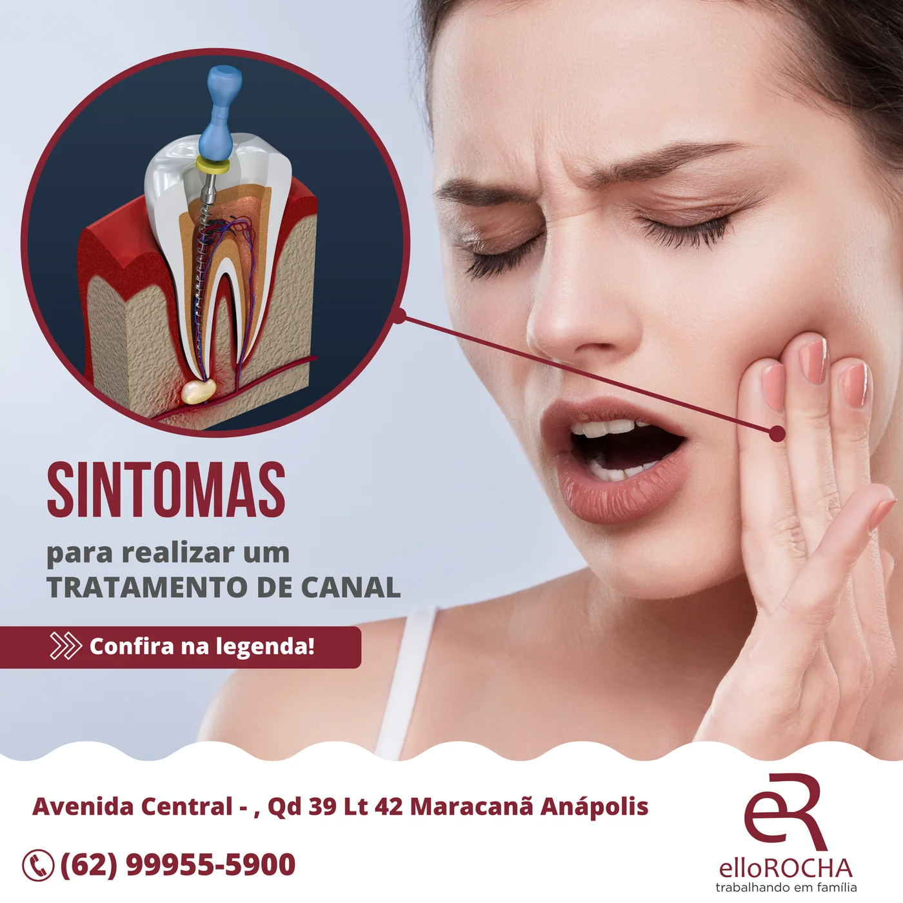

Tratamento de canal
para preservar seu dente.
Quando a dor aparece ou a infecção atinge a parte interna do dente, o tratamento de canal pode aliviar o incômodo e preservar o dente natural sempre que possível.

A saúde do seu sorriso,
do começo ao fim.
Alívio da dor
O canal trata a origem da dor quando há inflamação ou infecção na polpa do dente.
Preservar o dente
A meta é manter o dente natural em boca, evitando extrações quando há indicação de tratamento.
Infecção controlada
Limpeza interna dos canais, medicação quando necessária e selamento para proteger o dente.
Prevenção
Orientação e acompanhamento para evitar problemas antes que apareçam.
Atendimento sem medo
Acolhimento de verdade para quem tem receio de ir ao dentista.
Acompanhamento
A mesma família cuidando de você ao longo do tempo, consulta após consulta.


Sem dor,
sem medo.
Avaliação
Identificamos a causa da dor e explicamos o tratamento com clareza.
Anestesia
Tudo feito com você confortável e sem sentir dor durante o procedimento.
Limpeza do canal
Remoção da infecção e higienização interna do dente com técnica apurada.
Finalização
Selamento do canal e orientação para a restauração final, quando indicada.
Dra. Larissa Michelle
Endodontista (canal)
CRO-GO 10166
A Dra. Larissa Michelle é especialista em endodontia e conduz o tratamento de canal com calma, técnica e foco em preservar o dente natural. O objetivo é aliviar a dor, controlar a infecção e devolver segurança ao paciente.
Sobre o dia a dia do sorriso.
Com anestesia e técnica adequada, o procedimento tende a ser tranquilo. Muitas vezes o canal é justamente o tratamento que elimina a dor que levou você ao dentista.
Dor persistente, sensibilidade prolongada, inchaço, escurecimento do dente ou cárie profunda pedem avaliação o quanto antes.
De jeito nenhum. Aqui o atendimento é acolhedor e sem julgamento — o importante é você ter dado o passo de cuidar do seu sorriso. A gente segue daqui com você.
Cuide do seu sorriso com quem ama o que faz.
Agende sua consulta de avaliação e venha nos conhecer.